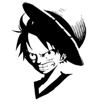

|  |
Monkey D. Luffy, also known as "Straw Hat" Luffy, is a fictional
character and the protagonist of the One Piece manga series, created
by Eiichiro Oda. |
| Name | Position | Power lvl |
|---|---|---|
| zoro | Vice captain | ★★★★★ |
| Sanji | Cook | ★★★★★ |
| Nami | Navigator | ★★ |